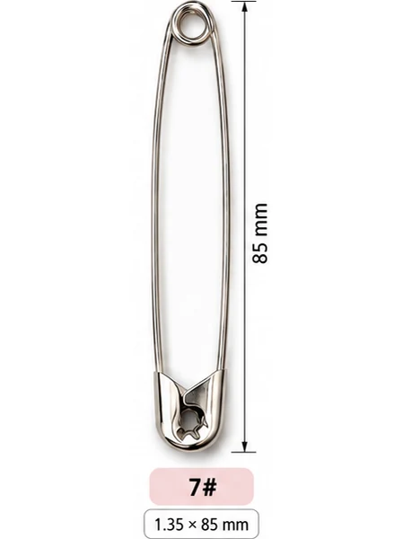

เข็มกลัดซ่อนปลาย · ขายส่ง สำเพ็ง
เข็มกลัดซ่อนปลาย เบอร์ 7 ขนาด 85 มม.
เหล็กสปริงชุบนิกเกิล ปลายซ่อนในฝาครอบ ไม่ทิ่มมือ — กลุ่มที่ใช้บ่อย: อุตสาหกรรม งานตกแต่ง กิ๊ฟต์ช็อป ขายยกกล่องราคาส่ง แบ่งขายพวง/กุรุสได้
นับจำนวนจริง ไม่ชั่ง
แบ่งขาย พวง/กุรุส/กล่อง
ส่งทั่วไทย
ตราสิงโตเป็นแบรนด์ของ ม.ทวีภัณฑ์ สั่งที่นี่คือซื้อตรงจากต้นทาง ไม่ผ่านคนขายต่อ รู้จักเข็มกลัดตราสิงโต

ความยาวเทียบเบอร์ใหญ่สุด (เบอร์ 7 = 85 มม.)
ความยาว8.5 ซม. · 85 มม. (3-1/4")
บรรจุ/กล่อง~144 ตัว
วัสดุเหล็กสปริงชุบนิกเกิล
ขนาดลวด1.35 มม.
สีที่มีเงิน (ชุบนิกเกิล)
เบอร์ 7 เหมาะกับงานอะไร
- เข็มกลัดยักษ์ทำพวงกุญแจ
- กลัดป้ายผ้าขนาดใหญ่ / แบนเนอร์
- แขวนสินค้ากิ๊ฟต์ช็อป
- งานตกแต่ง display
เปรียบเทียบกับเบอร์ใกล้เคียง
| เบอร์ | ความยาว | บรรจุ/กล่อง | งานเด่น |
|---|---|---|---|
| เบอร์ 5 | 65 มม. (6.5 ซม.) | ~216 | กลัดผ้าเวที / ผ้าประดับงาน |
| เบอร์ 6 | 75 มม. (7.5 ซม.) | ~144 | กลัดผ้าใบกันแดด |
| เบอร์ 7 (หน้านี้) | 85 มม. (8.5 ซม.) | ~144 | เข็มกลัดยักษ์ทำพวงกุญแจ |
ดูตารางขนาดครบทุกเบอร์ → · คู่มืองานผ้าใบ เต็นท์ → · เบอร์ไหนใช้ทำอะไร → · สั่งยกกล่อง ราคาส่ง →
คำถามที่พบบ่อย
เข็มกลัดเบอร์ 7 ยาวกี่เซน?
ยาวประมาณ 8.5 ซม. (85 มม. / 3-1/4") วัดจากหัวฝาถึงปลายขดสปริง — ผู้ผลิตแต่ละเจ้าอาจต่างกัน ±2–3 มม.
เบอร์ 7 กล่องละกี่ตัว?
ประมาณ 144 ตัว/กล่อง (นับจำนวนจริง ไม่ชั่งน้ำหนัก) — แบ่งขายเป็นพวง 12 ตัว หรือกุรุส 144 ตัวก็ได้
เข็มกลัดยักษ์เอาไปทำอะไรได้บ้าง?
ยอดฮิตคือพวงกุญแจ/งานคราฟต์ แขวนป้ายผ้าใหญ่ และแขวนสินค้าหน้าร้าน — ตัวใหญ่เห็นชัด จับถนัดมือ
สั่งเข็มกลัดเบอร์ 7 — บอกจำนวนที่ต้องการได้เลย
ทีมงานเช็คสต็อก แจ้งราคาปลีก-ส่ง และค่าจัดส่ง จบในแชทเดียว